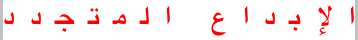

1. Introduction
This module describes the typesetting controls of CSS; that is, the features of CSS that control the translation of source text to formatted, line-wrapped text. Various CSS properties provide control over case transformation, white space collapsing, text wrapping, line breaking rules and hyphenation, alignment and justification, spacing, and indentation.
Font selection is covered in CSS Fonts Level 3 [CSS3-FONTS].
Features for decorating text, such as underlines, emphasis marks, and shadows, (previously part of this module) are covered in CSS Text Decoration Level 3 [CSS3-TEXT-DECOR].
Bidirectional and vertical text are addressed in CSS Writing Modes Level 3 [CSS3-WRITING-MODES].
1.1. Module Interactions
This module, together with [CSS3-TEXT-DECOR], replaces and extends the text-level features defined in [CSS21] chapter 16.
1.2. Values
This specification follows the CSS property definition conventions from [CSS21]. Value types not defined in this specification are defined in CSS Level 2 Revision 1 [CSS21]. Other CSS modules may expand the definitions of these value types: for example [CSS3VAL], when combined with this module, expands the definition of the <length> value type as used in this specification.
In addition to the property-specific values listed in their definitions, all properties defined in this specification also accept the inherit keyword as their property value. For readability it has not been repeated explicitly.
1.3. Terminology
In addition to the terms defined below, other terminology and concepts used in this specification are defined in [CSS21] and [CSS3-WRITING-MODES].
1.3.1. Characters and Letters
The basic unit of typesetting is the character. However, because writing systems are not always as simple as the basic English alphabet, what a character actually is depends on the context in which the term is used. For example, in Hangul (the Korean writing system), each square representation of a syllable (e.g. 한=Han) can be considered a character. However, the square symbol is really composed of multiple letters each representing a phoneme (e.g. ㅎ=h, ㅏ=a, ㄴ=n) and these also could each be considered a character.
A basic unit of computer text encoding, for any given encoding, is also called a character, and depending on the encoding, a single encoding character might correspond to the entire pre-composed syllabic character (e.g. 한), to the individual phonemic character (e.g. ㅎ), or to smaller units such as a base letterform (e.g. ㅇ) and any combining marks that vary it (e.g. extra strokes that represent aspiration).
In turn, a single encoding character can be represented in the data stream as one or more bytes; and in programming environments one byte is sometimes also called a character.
Therefore the term character is fairly ambiguous where technical precision is required.
For text layout, we will refer to the typographic character unit as the basic unit of text. Even within the realm of text layout, the relevant character unit depends on the operation. For example, line-breaking and letter-spacing will segment a sequence of Thai characters that include U+0E33 THAI CHARACTER SARA AM differently; or the behaviour of a conjunct consonant in a script such as Devanagari may depend on the font in use. So the typographic character represents a unit of the writing system—such as a Latin alphabetic letter (including its diacritics), Hangul syllable, Chinese ideographic character, Myanmar syllable cluster—that is indivisible with respect to a particular typographic operation (line-breaking, first-letter effects, tracking, justification, vertical arrangement, etc.).
Unicode Standard Annex #29: Text Segmentation defines a unit called the grapheme cluster which approximates the typographic character.
A UA must use the extended grapheme cluster (not legacy grapheme cluster), as defined in [UAX29],
as the basis for its typographic character unit.
However, the UA should tailor the definitions
as required by typographic tradition
since the default rules are not always appropriate or ideal—
The rules for such tailorings are out of scope for CSS.
-
In some scripts such as Myanmar or Devanagari, the typographic character unit for both justification and line-breaking is an entire syllable, which can include more than one [UAX29] grapheme cluster.
-
In other scripts such as Thai or Lao, even though for line-breaking the typographic character matches Unicode’s default grapheme clusters, for letter-spacing the relevant unit is less than a [UAX29] grapheme cluster, and may require decomposition or other substitutions before spacing can be inserted.
For instance, to properly letter-space the Thai word คำ (U+0E04 + U+0E33), the U+0E33 needs to be decomposed into U+0E4D + U+0E32, and then the extra letter-space inserted before the U+0E32: คํ า.
A slightly more complex example is น้ำ (U+0E19 + U+0E49 + U+0E33). In this case, normal Thai shaping will first decompose the U+0E33 into U+0E4D + U+0E32 and then swap the U+0E4D with the U+0E49, giving U+0E19 + U+0E4D + U+0E49 + U+0E32. As before the extra letter-space is then inserted before the U+0E32: นํ้ า.
-
Vertical typesetting [CSS3-WRITING-MODES] can also require tailoring. For example, when typesetting upright text, Tibetan tsek and shad marks are kept with the preceding grapheme cluster, rather than treated as an independent typographic character unit.
A typographic letter unit or letter for the purpose of this specification is a typographic character unit belonging to one of the Letter or Number general categories in Unicode. [UAX44] See Character Properties for how to determine the Unicode properties of a typographic character unit.
The rendering characteristics of a typographic character unit divided by an element boundary is undefined: it may be rendered as belonging to either side of the boundary, or as some approximation of belonging to both. Authors are forewarned that dividing grapheme clusters by element boundaries may give inconsistent or undesired results.
1.3.2. Languages and Typesetting
Many typographic effects vary by linguistic context. In CSS, language-specific typographic tailorings are only applied when the content language is known (declared).
Authors should language-tag their content accurately for the best typographic behavior.
The content language of an element is the (human) language
the element is declared to be in, according to the rules of the document language.
For example, the rules for determining the content language of an HTML
element use the lang attribute and are defined in [HTML5],
and the rules for determining the content language of an XML element use
the xml:lang attribute and are defined in [XML10].
Note that it is possible for the content language of an element
to be unknown.
2. Transforming Text
2.1. Case Transforms: the text-transform property
| Name: | text-transform |
|---|---|
| Value: | none | capitalize | uppercase | lowercase | full-width |
| Initial: | none |
| Applies to: | all elements |
| Inherited: | yes |
| Percentages: | N/A |
| Media: | visual |
| Computed value: | as specified |
| Animatable: | no |
| Canonical order: | N/A |
This property transforms text for styling purposes. (It has no effect on the underlying content.) Values have the following meanings:
- none
- No effects.
- capitalize
- Puts the first typographic letter unit of each word in titlecase; other characters are unaffected.
- uppercase
- Puts all lettersin uppercase.
- lowercase
- Puts all letters in lowercase.
- full-width
- Puts all typographic character units in fullwidth form. If a character does not have a corresponding fullwidth form, it is left as is. This value is typically used to typeset Latin letters and digits as if they were ideographic characters.
For capitalize, what constitutes a “word“ is UA-dependent; [UAX29] is suggested (but not required) for determining such word boundaries. Authors should not expect capitalize to follow language-specific titlecasing conventions (such as skipping articles in English).
The following example converts the ASCII characters used in abbreviations in Japanese text to their fullwidth variants so that they lay out and line break like ideographs:
abbr:lang(ja) { text-transform: full-width; }
Note that, as defined in Text Processing Order of Operations, transforming text affects line-breaking and other formatting operations.
The UA must use the full case mappings for Unicode characters, including any conditional casing rules, as defined in Default Case Algorithm section of The Unicode Standard [UNICODE]. If (and only if) the content language of the element is, according to the rules of the document language, known, then any appropriate language-specific rules must be applied as well. These minimally include, but are not limited to, the language-specific rules in Unicode’s SpecialCasing.txt.
For example, in Turkish there are two “i”s, one with a dot—“İ” and “i”— and one without—“I” and “ı”. Thus the usual case mappings between “I” and “i” are replaced with a different set of mappings to their respective undotted/dotted counterparts, which do not exist in English. This mapping must only take effect if the content language is Turkish (or another Turkic language that uses Turkish casing rules); in other languages, the usual mapping of “I” and “i” is required. This rule is thus conditionally defined in Unicode’s SpecialCasing.txt file.
The definition of fullwidth and halfwidth forms can be found on the
Unicode consortium web site at [UAX11].
The mapping to fullwidth form is defined by taking code points with
the <wide> or the <narrow> tag
in their Decomposition_Mapping in [UAX44].
For the <narrow> tag,
the mapping is from the code point to the decomposition (minus <narrow> tag),
and for the <wide> tag,
the mapping is from the decomposition (minus the <wide> tag)
back to the original code point.
Text transformation happens after white space processing, which means that full-width only transforms U+0020 spaces to U+3000 within preserved white space.
A future level of CSS may introduce the ability to create custom mapping tables for less common text transforms, such as by an @text-transform rule similar to @counter-style from [CSS-COUNTER-STYLES-3].
3. White Space and Wrapping: the white-space property
| Name: | white-space |
|---|---|
| Value: | normal | pre | nowrap | pre-wrap | pre-wrap-auto | pre-line |
| Initial: | normal |
| Applies to: | all elements |
| Inherited: | yes |
| Percentages: | N/A |
| Media: | visual |
| Computed value: | as specified |
| Animatable: | no |
| Canonical order: | N/A |
This property specifies two things:
- whether and how white space inside the element is collapsed
- whether lines may wrap at unforced soft wrap opportunities
Values have the following meanings, which must be interpreted according to the White Space Processing and Line Breaking rules:
- normal
- This value directs user agents to collapse sequences of white space into a single character (or in some cases, no character). Lines may wrap at allowed soft wrap opportunities, as determined by the line-breaking rules in effect, in order to minimize inline-axis overflow.
- pre
- This value prevents user agents from collapsing sequences of white space. Segment breaks such as line feeds and carriage returns are preserved as forced line breaks. Lines only break at forced line breaks; content that does not fit within the block container overflows it.
- nowrap
- Like normal, this value collapses white space; but like pre, it does not allow wrapping.
- pre-wrap
- Like pre, this value preserves white space; but like normal, it allows wrapping.
- pre-wrap-auto
- Like pre-wrap, this value preserves white space and allows wrapping. However, some of the behavior is made UA dependent (See The White Space Processing Rules for details). This flexibility allows UAs to match platform conventions, in particular with respect to multi-line editable text fields, and when preserved white space at the end a line would cause the line to overflow.
- pre-line
- Like normal, this value collapses consecutive spaces and allows wrapping, but preserves segment breaks in the source as forced line breaks.
Suggestions of a better name for pre-wrap-auto are welcome.
Note: pre-wrap-auto is at risk.
The following informative table summarizes the behavior of various white-space values:
| New Lines | Spaces and Tabs | Text Wrapping | |
|---|---|---|---|
| normal | Collapse | Collapse | Wrap |
| pre | Preserve | Preserve | No wrap |
| nowrap | Collapse | Collapse | No wrap |
| pre-wrap | Preserve | Preserve | Wrap |
| pre-wrap-auto | Preserve | Preserve | Wrap |
| pre-line | Preserve | Collapse | Wrap |
See White Space Processing Rules for details on how white space collapses. An informative summary of collapsing (normal and nowrap) is presented below:
- A sequence of segment breaks and other white space between two Chinese, Japanese, or Yi characters collapses into nothing.
- A zero width space before or after a white space sequence containing a segment break causes the entire sequence of white space to collapse into a zero width space.
- Otherwise, consecutive white space collapses into a single space.
See Line Breaking for details on wrapping behavior.
4. White Space Processing Details
The source text of a document often contains formatting that is not relevant to the final rendering: for example, breaking the source into segments (lines) for ease of editing or adding white space characters such as tabs and spaces to indent the source code. CSS white space processing allows the author to control interpretation of such formatting: to preserve or collapse it away when rendering the document. White space processing in CSS interprets white space characters only for rendering: it has no effect on the underlying document data.
White space processing in CSS is controlled with the white-space property.
CSS does not define document segmentation rules. Segments can be
separated by a particular newline sequence (such as a line feed or
CRLF pair), or delimited by some other mechanism, such as the SGML RECORD-START and RECORD-END tokens.
For CSS processing, each document language–defined segment break,
CRLF sequence (U+000D U+000A), carriage return (U+000D), and line feed (U+000A)
in the text is treated as a segment break,
which is then interpreted for rendering as specified by the white-space property.
Note that a document parser might not only normalize any segment breaks, but also collapse other space characters or otherwise process white space according to markup rules. Because CSS processing occurs after the parsing stage, it is not possible to restore these characters for styling. Therefore, some of the behavior specified below can be affected by these limitations and may be user agent dependent.
Note that anonymous blocks consisting entirely of collapsible white space are removed from the rendering tree. Thus any such white space surrounding a block-level element is collapsed away. See [CSS21] section 9.2.2.1
Control characters (Unicode category Cc)
other than tab (U+0009), line feed (U+000A), form feed (U+000C), and carriage return (U+000D)
must be rendered as a visible glyph
and otherwise treated as any other character
of the Other Symbols (So) general category and Common script.
The UA may use a glyph provided by a font specifically for the control character,
substitute the glyphs provided for the corresponding symbol in the Control Pictures block,
generate a visual representation of its codepoint value,
or use some other method to provide an appropriate visible glyph.
As required by [UNICODE],
unsupported Default_ignorable characters must be ignored for rendering.
4.1. The White Space Processing Rules
White space processing in CSS affects only the document white space characters: spaces (U+0020), tabs (U+0009), and segment breaks.
Note that the set of characters considered document white space (part of the document content) and that considered syntactic white space (part of the CSS syntax) are not necessarily identical. However, since both include spaces (U+0020), tabs (U+0009), line feeds (U+000A), and carriage returns (U+000D) most authors won’t notice any differences.
4.1.1. Phase I: Collapsing and Transformation
For each inline (including anonymous inlines; see [CSS21] section 9.2.2.1) within an inline formatting context, white space characters are handled as follows, ignoring bidi formatting characters as if they were not there:
-
If white-space is set to normal, nowrap, or pre-line, white space characters are considered collapsible and are processed by performing the following steps:
- All spaces and tabs immediately preceding or following a segment break are removed.
- Segment breaks are transformed for rendering according to the segment break transformation rules.
- Every tab is converted to a space (U+0020).
- Any space immediately following another collapsible space—even one outside the boundary of the inline containing that space, provided both spaces are within the same inline formatting context—is collapsed to have zero advance width. (It is invisible, but retains its soft wrap opportunity, if any.)
-
If white-space is set to pre-wrap, any sequence of spaces is preserved. This is achieved by treating it as a sequence of non-breaking spaces, except that a soft wrap opportunity exists between each of the spaces of this preserved sequence, as well as at the beginning and at the end of the sequence.
-
If white-space is set to pre-wrap-auto, any sequence of spaces is preserved. This is achieved by treating it as a sequence of non-breaking spaces. However, unlike with pre-wrap, whether soft wrap opportunities exist in this sequence is user-agent defined. These UA-specific rules may be context dependent.
Then, the entire block is rendered. Inlines are laid out, taking bidi reordering into account, and wrapping as specified by the white-space property.
The following example illustrates the interaction of white-space collapsing and bidirectionality. Consider the following markup fragment, taking special note of spaces (with varied backgrounds and borders for emphasis and identification):
<ltr>A <rtl> B </rtl> C</ltr>where the <ltr> element represents a left-to-right embedding
and the <rtl> element represents a right-to-left embedding.
If the white-space property is set to normal,
the white-space processing model will result in the following:
- The space before the B ( ) will collapse with the space after the A ( ).
- The space before the C ( ) will collapse with the space after the B ( ).
This will leave two spaces, one after the A in the left-to-right embedding level, and one after the B in the right-to-left embedding level. The text will then be ordered according to the Unicode bidirectional algorithm, with the end result being:
A BC
Note that there will be two spaces between A and B, and none between B and C. This is best avoided by putting spaces outside the element instead of just inside the opening and closing tags and, where practical, by relying on implicit bidirectionality instead of explicit embedding levels.
4.1.2. Segment Break Transformation Rules
When white-space is pre, pre-wrap, pre-wrap-auto, or pre-line, segment breaks are not collapsible and are instead transformed into a preserved line feed (U+000A).
For other values of white-space, segment breaks are collapsible, and are either transformed into a space (U+0020) or removed depending on the context before and after the break:
- If the character immediately before or immediately after the segment break is the zero-width space character (U+200B), then the break is removed, leaving behind the zero-width space.
- Otherwise, if the East Asian Width property [UAX11] of both
the character before and after the line feed is
F,W, orH(notA), and neither side is Hangul, then the segment break is removed. - Otherwise, the segment break is converted to a space (U+0020).
Note that the white space processing rules have already removed any tabs and spaces after the segment break before these checks take place.
Comments on how well this would work in practice would be very much appreciated, particularly from people who work with Thai and similar scripts. Note that browser implementations do not currently follow these rules (although IE does in some cases transform the break).
4.1.3. Phase II: Trimming and Positioning
As each line is laid out,
- A sequence of collapsible spaces at the beginning of a line is removed.
- Each tab is rendered as a horizontal shift that lines up the start edge of the next glyph with the next tab stop. Tab stops occur at points that are multiples of the tab size from the block’s starting content edge. The tab size is given by the tab-size property.
- A sequence of collapsible spaces at the end of a line is removed.
- If spaces or tabs at the end of a line are non-collapsible but have white-space set to pre-wrap-auto the UA may visually collapse their character advance widths.
White space that was not removed or collapsed during the white space processing steps is called preserved white space.
4.2. Tab Character Size: the tab-size property
| Name: | tab-size |
|---|---|
| Value: | <integer> | <length> |
| Initial: | 8 |
| Applies to: | block containers |
| Inherited: | yes |
| Percentages: | N/A |
| Media: | visual |
| Computed value: | the specified integer or length made absolute |
| Animatable: | as length |
| Canonical order: | N/A |
This property determines the tab size used to render preserved tab characters (U+0009). Integers represent the measure as multiples of the space character’s advance width (U+0020). Negative values are not allowed.
5. Line Breaking and Word Boundaries
When inline-level content is laid out into lines, it is broken across line boxes. Such a break is called a line break. When a line is broken due to explicit line-breaking controls, or due to the start or end of a block, it is a forced line break. When a line is broken due to content wrapping (i.e. when the UA creates unforced line breaks in order to fit the content within the measure), it is a soft wrap break. The process of breaking inline-level content into lines is called line breaking.
Wrapping is only performed at an allowed break point, called a soft wrap opportunity.
In most writing systems, in the absence of hyphenation a soft wrap opportunity occurs only at word boundaries. Many such systems use spaces or punctuation to explicitly separate words, and soft wrap opportunities can be identified by these characters. Scripts such as Thai, Lao, and Khmer, however, do not use spaces or punctuation to separate words. Although the zero width space (U+200B) can be used as an explicit word delimiter in these scripts, this practice is not common. As a result, a lexical resource is needed to correctly identify soft wrap opportunities in such texts.
In several other writing systems, (including Chinese, Japanese, Yi, and sometimes also Korean) a soft wrap opportunity is based on syllable boundaries, not word boundaries. In these systems a line can break anywhere except between certain character combinations. Additionally the level of strictness in these restrictions can vary with the typesetting style.
CSS does not fully define where soft wrap opportunities occur; however some controls are provided to distinguish common variations.
Further information on line breaking conventions can be found in [JLREQ] and [JIS4051] for Japanese, [ZHMARK] for Chinese, and in [UAX14] for all scripts in Unicode.
Any guidance for appropriate references here would be much appreciated.
5.1. Line Breaking Details
When determining line breaks:
- Regardless of the white-space value, lines always break at each preserved forced break character: for all values, line-breaking behavior defined for the BK, CR, LF, CM, NL, and SG line breaking classes in [UAX14] must be honored.
- When white-space allows wrapping, line breaking behavior defined for the WJ, ZW, and GL line-breaking classes in [UAX14] must be honored.
- UAs that allow wrapping at punctuation other than spaces should prioritize breakpoints. For example, if breaks after slashes are given a lower priority than spaces, the sequence "check /etc" will never break between the "/" and the "e". As long as care is taken to avoid such awkward breaks, allowing breaks at appropriate punctuation other than spaces is recommended, as it results in more even-looking margins, particularly in narrow measures. The UA may use the width of the containing block, the text’s language, and other factors in assigning priorities.
- Out-of-flow elements do not introduce a forced line break or soft wrap opportunity in the flow.
- The line breaking behavior of a replaced element or other atomic inline
is equivalent to that of the Object Replacement Character (U+FFFC)
and introduces a soft wrap opportunity both before and after itself.
For Web-compatibility, this rule take precedence over
WJandGLhandling; in terms of [UAX14], this shifts theCBrule (LB20) immediately above theWJandGLrules (LB11/LB12). - For soft wrap opportunities created by characters that disappear at the line break (e.g. U+0020 SPACE), properties on the element containing that character control the line breaking at that opportunity. For soft wrap opportunities defined by the boundary between two characters, the properties on the element containing the boundary control breaking.
- For soft wrap opportunities before the first or after the last character of a box, the break occurs immediately before/after the box (at its margin edge) rather than breaking the box between its content edge and the content.
- Line breaking in/around Ruby is defined in CSS Ruby [CSS3RUBY].
5.2. Breaking Rules for Letters: the word-break property
| Name: | word-break |
|---|---|
| Value: | normal | keep-all | break-all |
| Initial: | normal |
| Applies to: | all elements |
| Inherited: | yes |
| Percentages: | N/A |
| Media: | visual |
| Computed value: | specified value |
| Animatable: | no |
| Canonical order: | N/A |
This property specifies soft wrap opportunities between letters, i.e. where it is “normal” and permissible to break lines of text. It does not affect rules governing the soft wrap opportunities created by spaces and punctuation. (See line-break for controls affecting punctuation.)
For example, in some styles of CJK typesetting, English words are allowed to break between any two letters, rather than only at spaces or hyphenation points; this can be enabled with word-break:break-all.
An example of English text embedded in Japanese being broken at an arbitrary point in the word.
As another example, Korean has two styles of line-breaking: between any two Korean syllables (word-break: normal) or, like English, mainly at spaces (word-break: keep-all).
각 줄의 마지막에 한글이 올 때 줄 나눔 기 /* break between syllables */준을 “글자” 또는 “어절” 단위로 한다.
각 줄의 마지막에 한글이 올 때 줄 나눔 /* break only at spaces */기준을 “글자” 또는 “어절” 단위로 한다.
To enable additional break opportunities only in the case of overflow, see overflow-wrap.
Values have the following meanings:
- normal
- Words break according to their customary rules, as described above. Korean, which commonly exhibits two different behaviors, allows breaks between any two consecutive Hangul/Hanja.
- break-all
- Breaking is allowed within “words”: in addition to normal soft wrap opportunities, lines may break between any two typographic letter units (except where forbidden by the line-break property). Hyphenation is not applied. This option is used mostly in a context where the text consists predominantly of CJK characters with only short non-CJK excerpts, and it is desired that the text be better distributed on each line.
- keep-all
-
Breaking is forbidden within “words”:
implicit soft wrap opportunities between typographic letter units are suppressed,
i.e. breaks are prohibited between pairs of letters
(regardless of line-break settings)
except where opportunities exist due to dictionary-based breaking.
Otherwise this option is equivalent to normal.
In this style, sequences of CJK characters do not break.
This is the other common behavior for Korean (which uses spaces between words), and is also useful for mixed-script text where CJK snippets are mixed into another language that uses spaces for separation.
Symbols that line-break the same way as letters of a particular category are affected the same way as those letters.
Here’s a mixed-script sample text:
这是一些汉字, and some Latin, و کمی نوشتن عربی, และตัวอย่างการเขียนภาษาไทย.
The break-points are determined as follows (indicated by ‘·’):
- word-break: normal
-
这·是·一·些·汉·字,·and·some·Latin,·و·کمی·نوشتن·عربی,·และ·ตัวอย่าง·การเขียน·ภาษาไทย.
- word-break: break-all
-
这·是·一·些·汉·字,·a·n·d·s·o·m·e·L·a·t·i·n,·و·ﮐ·ﻤ·ﻰ·ﻧ·ﻮ·ﺷ·ﺘ·ﻦ·ﻋ·ﺮ·ﺑ·ﻰ,·แ·ล·ะ·ตั·ว·อ·ย่·า·ง·ก·า·ร·เ·ขี·ย·น·ภ·า·ษ·า·ไ·ท·ย.
- word-break: keep-all
-
这是一些汉字,·and·some·Latin,·و·کمی·نوشتن·عربی,·แและ·ตัวอย่าง·การเขียน·ภาษาไทย.
When shaping scripts such as Arabic are allowed to break within words due to break-all, the characters must still be shaped as if the word were not broken.
5.3. Breaking Rules for Punctuation: the line-break property
| Name: | line-break |
|---|---|
| Value: | auto | loose | normal | strict |
| Initial: | auto |
| Applies to: | all elements |
| Inherited: | yes |
| Percentages: | N/A |
| Media: | visual |
| Computed value: | specified value |
| Animatable: | no |
| Canonical order: | N/A |
This property specifies the strictness of line-breaking rules applied within an element: particularly how wrapping interacts with punctuation and symbols. Values have the following meanings:
- auto
- The UA determines the set of line-breaking restrictions to use, and it may vary the restrictions based on the length of the line; e.g., use a less restrictive set of line-break rules for short lines.
- loose
- Breaks text using the least restrictive set of line-breaking rules. Typically used for short lines, such as in newspapers.
- normal
- Breaks text using the most common set of line-breaking rules.
- strict
- Breaks text using the most stringent set of line-breaking rules.
The rules here are following guidelines from KLREQ for Korean, which don’t allow the Chinese/Japanese-specific breaks. However, the resulting behavior could use some review and feedback to make sure they are correct, particularly when “word basis” breaking is used (word-break: keep-all) in Korean.
CSS distinguishes between three levels of strictness in the rules for text wrapping. The precise set of rules in effect for each level is up to the UA and should follow language conventions. However, this specification does require that:
-
The following breaks are forbidden in strict line breaking
and allowed in normal and loose:
- breaks before Japanese small kana or the Katakana-Hiragana prolonged sound mark:
i.e. characters with the Unicode Line Break property
CJ. (See LineBreak.txt in [UNICODE].)
- breaks before Japanese small kana or the Katakana-Hiragana prolonged sound mark:
i.e. characters with the Unicode Line Break property
-
The following breaks are allowed for normal and loose line breaking
if the content language is Chinese or Japanese,
and are otherwise forbidden:
- breaks before hyphens:
‐ U+2010, – U+2013, 〜 U+301C, ゠ U+30A0
- breaks before hyphens:
-
The following breaks are forbidden for normal and strict line breaking
and allowed in loose:
- breaks before iteration marks:
々 U+3005, 〻 U+303B, ゝ U+309D, ゞ U+309E, ヽ U+30FD, ヾ U+30FE - breaks between inseparable characters
such as ‥ U+2025, … U+2026
i.e. characters with the Unicode Line Break property
IN. (See LineBreak.txt in [UNICODE].)
- breaks before iteration marks:
-
The following breaks are allowed for loose if the content language is Chinese or Japanese
and are otherwise forbidden:
- breaks before certain centered punctuation marks:
・ U+30FB, ： U+FF1A, ； U+FF1B, ･ U+FF65, ‼ U+203C, ⁇ U+2047, ⁈ U+2048, ⁉ U+2049, ！ U+FF01, ？ U+FF1F - breaks before suffixes:
Characters with the Unicode Line Break propertyPOand the East Asian Width property [UAX11]A,F, orW. - breaks after prefixes:
Characters with the Unicode Line Break propertyPRand the East Asian Width property [UAX11]A,F, orW.
- breaks before certain centered punctuation marks:
In the recommended list above, no distinction is made among the levels of strictness in non-CJK text: only CJK codepoints are affected, unless the text is marked as Chinese or Japanese, in which case some additional common codepoints are affected. However a future level of CSS may add behaviors affecting non-CJK text.
The CSSWG recognizes that in a future edition of the specification finer control over line breaking may be necessary to satisfy high-end publishing requirements.
6. Breaking Within Words
Hyphenation allows the controlled splitting of words to improve the layout of paragraphs, typically splitting words at syllabic or morphemic boundaries and visually indicating the split (usually by inserting a hyphen, U+2010). In some cases, hyphenation may also alter the spelling of a word. Regardless, hyphenation is a rendering effect only: it must have no effect on the underlying document content or on text selection or searching.
Hyphenation occurs when the line breaks at a valid hyphenation opportunity, which creates a soft wrap opportunity within the word. In CSS it is controlled with the hyphens property. CSS Text Level 3 does not define the exact rules for hyphenation, however UAs are strongly encouraged to optimize their line-breaking implementation to choose good break points and appropriate hyphenation points. Hyphenation opportunities are considered when calculating min-content intrinsic sizes.
CSS also provides the overflow-wrap property, which can allow arbitrary breaking within words when the text would otherwise overflow its container.
6.1. Hyphenation Control: the hyphens property
| Name: | hyphens |
| Value: | none | manual | auto |
|---|---|
| Initial: | manual |
| Applies to: | all elements |
| Inherited: | yes |
| Percentages: | N/A |
| Media: | visual |
| Computed value: | specified value |
| Animatable: | no |
| Canonical order: | N/A |
This property controls whether hyphenation is allowed to create more soft wrap opportunities within a line of text. Values have the following meanings:
- none
- Words are not hyphenated, even if characters inside the word explicitly define hyphenation opportunities.
- manual
-
Words are only hyphenated where there are characters inside the word
that explicitly suggest hyphenation opportunities.
In Unicode, U+00AD is a conditional "soft hyphen" and U+2010 is an unconditional hyphen. Unicode Standard Annex #14 describes the role of soft hyphens in Unicode line breaking. [UAX14] In HTML, ­ represents the soft hyphen character, which suggests a hyphenation opportunity.
ex­ample
- auto
- Words may be broken at hyphenation opportunities determined automatically by a language-appropriate hyphenation resource in addition to those indicated explicitly by a conditional hyphen. Automatic hyphenation opportunities within a word must be ignored if the word contains a conditional hyphen (­ or U+00AD), in favor of the conditional hyphen(s). However, if, even after breaking at such opportunities, a portion of that word is is still too long to fit on one line, an automatic hyphenation opportunity may be used.
Correct automatic hyphenation requires a hyphenation resource appropriate to the language of the text being broken. The UA is therefore only required to automatically hyphenate text for which the content language is known and for which it has an appropriate hyphenation resource.
Authors should correctly tag their content’s language (e.g. using the HTML lang attribute) in order to obtain correct automatic hyphenation. UAs may refuse to automatically hyphenate untagged content regardless of the hyphens property value.
When shaping scripts such as Arabic are allowed to break within words due to hyphenation, the characters must still be shaped as if the word were not broken.
6.2. Overflow Wrapping: the overflow-wrap/word-wrap property
| Name: | overflow-wrap, word-wrap |
|---|---|
| Value: | normal | break-word |
| Initial: | normal |
| Applies to: | all elements |
| Inherited: | yes |
| Percentages: | N/A |
| Media: | visual |
| Computed value: | specified value |
| Animatable: | no |
| Canonical order: | N/A |
This property specifies whether the UA may arbitrarily break within a word to prevent overflow when an otherwise-unbreakable string is too long to fit within the line box. It only has an effect when white-space allows wrapping. Possible values:
- normal
- Lines may break only at allowed break points. However, the restrictions introduced by word-break: keep-all may be relaxed to match word-break: normal if there are no otherwise-acceptable break points in the line.
- break-word
- An otherwise unbreakable sequence of characters may be broken at an arbitrary point if there are no otherwise-acceptable break points in the line. Shaping characters are still shaped as if the word were not broken, and grapheme clusters must stay together as one unit. No hyphenation character is inserted at the break point.
Soft wrap opportunities introduced by overflow-wrap: break-word are not considered when calculating min-content intrinsic sizes.
For legacy reasons, UAs must treat word-wrap as an alternate name for the overflow-wrap property, as if it were a shorthand of overflow-wrap.
7. Alignment and Justification
Alignment and justification controls how inline content is distributed within a line box.
7.1. Text Alignment: the text-align shorthand
| Name: | text-align |
|---|---|
| Value: | start | end | left | right | center | justify | match-parent | justify-all |
| Initial: | start |
| Applies to: | block containers |
| Inherited: | yes |
| Percentages: | N/A |
| Media: | visual |
| Computed value: | specified value, except for match-parent which computes as defined below |
| Animatable: | no |
| Canonical order: | N/A |
This shorthand property sets the text-align-all and text-align-last properties and describes how the inline-level content of a block is aligned along the inline axis if the content does not completely fill the line box. Values have the following meanings:
- start
- Inline-level content is aligned to the start edge of the line box.
- end
- Inline-level content is aligned to the end edge of the line box.
- left
- Inline-level content is aligned to the line left edge of the line box. (In vertical writing modes, this will be either the physical top or bottom, depending on text-orientation.) [CSS3-WRITING-MODES]
- right
- Inline-level content is aligned to the line right edge of the line box. (In vertical writing modes, this will be either the physical top or bottom, depending on text-orientation.) [CSS3-WRITING-MODES]
- center
- Inline-level content is centered within the line box.
- justify
- Text is justified according to the method specified by the text-justify property, in order to exactly fill the line box. Unless otherwise specified by text-align-last, the last line before a forced break or the end of the block is start-aligned.
- justify-all
- Same as justify, except text-align-last is also set to justify, forcing the last line to justify as well.
- match-parent
- This value behaves the same as inherit (computes to its parent’s computed value) except that an inherited start or end keyword is interpreted against its parent’s direction value and results in a computed value of either left or right.
All values except justify-all reset text-align-last to auto.
A block of text is a stack of line boxes. This property specifies how the inline-level boxes within each line box align with respect to the start and end sides of the line box. Alignment is not with respect to the viewport or containing block.
In the case of justify, the UA may stretch or shrink any inline boxes by adjusting their text. (See text-justify.) If an element’s white space is not collapsible, then the UA is not required to adjust its text for the purpose of justification and may instead treat the text as having no justification opportunities. If the UA chooses to adjust the text, then it must ensure that tab stops continue to line up as required by the white space processing rules.
If (after justification, if any) the inline contents of a line box are too long to fit within it, then the contents are start-aligned: any content that doesn’t fit overflows the line box’s end edge.
See Bidirectionality and line boxes for details on how to determine the start and end edges of a line box.
7.2. Default Text Alignment: the text-align-all property
| Name: | text-align-all |
|---|---|
| Value: | start | end | left | right | center | justify | match-parent |
| Initial: | start |
| Applies to: | block containers |
| Inherited: | yes |
| Percentages: | N/A |
| Media: | visual |
| Computed value: | specified value |
| Animatable: | no |
| Canonical order: | N/A |
This longhand of the text-align shorthand property specifies the inline alignment of all lines of inline content in the block container, except for last lines overridden by a non-auto value of text-align-last. See text-align for a full description of values.
Authors should use the text-align shorthand instead of this property.
7.3. Last Line Alignment: the text-align-last property
| Name: | text-align-last |
|---|---|
| Value: | auto | start | end | left | right | center | justify |
| Initial: | auto |
| Applies to: | block containers |
| Inherited: | yes |
| Percentages: | N/A |
| Media: | visual |
| Computed value: | specified value |
| Animatable: | no |
| Canonical order: | N/A |
This property describes how the last line of a block or a line right before a forced line break is aligned. If a line is also the first line of the block or the first line after a forced line break, text-align-last takes precedence over text-align-all.
If auto is specified, content on the affected line is aligned per text-align unless text-align is set to justify, in which case it is start-aligned. All other values have the same meanings as in text-align.
7.4. Justification Method: the text-justify property
| Name: | text-justify |
|---|---|
| Value: | auto | none | inter-word | inter-character |
| Initial: | auto |
| Applies to: | block containers and, optionally, inline elements |
| Inherited: | yes |
| Percentages: | N/A |
| Media: | visual |
| Computed value: | specified value |
| Animatable: | no |
| Canonical order: | N/A |
This property selects the justification method used when a line’s alignment is set to justify (see text-align). The property applies to block containers, but the UA may (but is not required to) also support it on inline elements. It takes the following values:
- auto
-
The UA determines the justification algorithm to follow, based
on a balance between performance and adequate presentation quality.
Since justification rules vary by writing system and language,
UAs should, where possible, use a justification algorithm appropriate to the text.
For example, the UA could use by default a justification method that is a simple universal compromise for all writing systems—such as primarily expanding word separators and between CJK typographic letter units along with secondarily expanding between Southeast Asian typographic letter units. Then, in cases where the content language of the paragraph is known, it could choose a more language-tailored justification behavior e.g. following [JLREQ] for Japanese, using cursive elongation for Arabic, using inter-word for German, etc.
An example of cursively-justified Arabic text, rendered by Tasmeem. Like English, Arabic can be justified by adjusting the spacing between words, but in most styles it can also be justified by calligraphically elongating or compressing the letterforms themselves. In this example, the upper text is extended to fill the line by the use of elongated (kashida) forms and swash forms, while the bottom line is compressed slightly by using a stacked combination for the characters between ت and م. By employing traditional calligraphic techniques, a typesetter can justify the line while preserving flow and color, providing a very high quality justification effect. However, this is by its nature a very script-specific effect.
Mixed-script text with text-justify: auto: this interpretation uses a universal-compromise justification method, expanding at spaces as well as between CJK and Southeast Asian letters. This effectively uses inter-word + inter-ideograph spacing for lines that have word-separators and/or CJK characters and falls back to inter-cluster behavior for lines that don’t or for which the space stretches too far.
- none
-
Justification is disabled: there are no justification opportunities within the text.
Mixed-script text with text-justify: none
This value is intended for use in user stylesheets to improve readability or for accessibility purposes.
- inter-word
-
Justification adjusts spacing at word separators only
(effectively varying the used word-spacing on the line).
This behavior is typical for languages that separate words using spaces,
like English or Korean.
Mixed-script text with text-justify: inter-word
- inter-character
-
Justification adjusts spacing between each pair of adjacent typographic character units (effectively varying the used letter-spacing on the line).
This value is sometimes used in East Asian systems such as Japanese.
For legacy reasons, UAs must also support the alternate keyword distribute with the exact same meaning and behavior.
Mixed-script text with text-justify: inter-character
Since optimal justification is language-sensitive, authors should correctly language-tag their content for the best results.
The exact justification algorithm is UA-dependent; however, CSS provides some general guidelines below.
7.4.1. Expanding and Compressing Text
When justifying text, the user agent takes the remaining space between the ends of a line’s contents and the edges of its line box, and distributes that space throughout its contents so that the contents exactly fill the line box. The user agent may alternatively distribute negative space, putting more content on the line than would otherwise fit under normal spacing conditions.
A justification opportunity is a point where the justification algorithm may alter spacing within the text. A justification opportunity can be provided by a single typographic character unit (such as a word separator), or by the juxtaposition of two typographic character units. Space distributed by justification is in addition to the spacing defined by the letter-spacing or word-spacing properties. However, when space is distributed to a word separator justification opportunity, it is applied under the same rules as for word-spacing. Similarly, when space is distributed to an justification opportunity between two typographic character units, it is applied under the same rules as for letter-spacing.
A justification algorithm may divide justification opportunities into different priority levels. All justification opportunities within a given level are expanded or compressed at the same priority, regardless of which typographic character units created that opportunity. For example, if justification opportunities between two Han characters and between two Latin letters are defined to be at the same level (as they are in the inter-character justification style), they are not treated differently because they originate from different typographic character units. It is not defined in this level whether or how other factors (such as font size, letter-spacing, glyph shape, position within the line, etc.) may influence the distribution of space to justification opportunities within the line.
The UA may enable or break optional ligatures or use other font features such as alternate glyphs or glyph compression to help justify the text under any method. This behavior is not controlled by this level of CSS. However, UAs must not break required ligatures or otherwise disable features required to correctly shape complex scripts.
7.4.2. Handling Symbols and Punctuation
When determining justification opportunities, a typographic character unit from the Unicode Symbols (S*) and Punctuation (P*) classes is generally treated the same as a typographic letter unit of the same script (or, if the character’s script property is Common, then as a typographic letter unit of the dominant script).
However, by typographic tradition there may be additional rules controlling the justification of symbols and punctuation. Therefore, the UA may reassign specific characters or introduce additional levels of prioritization to handle justification opportunities involving symbols and punctuation.
For example, there are traditionally no justification opportunities between consecutive U+2014 Em Dash ‘—’, U+2015 Horizontal Bar ‘―’, U+2026 Horizontal Ellipsis ‘…’, or U+2025 Two Dot Leader ‘‥’ characters [JLREQ]; thus a UA might assign these characters to a “never” prioritization level. As another example, certain fullwidth punctuation characters (such as U+301A Left White Square Bracket ‘〚’) are considered to contain a justification opportunity in Japanese. The UA might therefore assign these characters to a higher prioritization level than the opportunities between ideographic characters.
7.4.3. Unexpandable Text
If the inline contents of a line cannot be stretched to the full width of the line box, then they must be aligned as specified by the text-align-last property. (If text-align-last is justify, then they must be aligned as for center if text-justify is inter-character, and as start otherwise.)
7.4.4. Cursive Scripts
Justification must not introduce gaps between the joined typographic letter units of cursive scripts such as Arabic. If it is able, the UA may translate space distributed to justification opportunities within a run of such typographic letter units into some form of cursive elongation for that run. It otherwise must assume that no justification opportunity exists between any pair of typographic letter units in cursive script (regardless of whether they join).
The following are examples of unacceptable justification:

Adding gaps between every pair of Arabic letters

Adding gaps between every pair of unjoined Arabic letters
Some font designs allow for the use of the tatweel character for justification. A UA that performs tatweel-based justification must properly handle the rules for its use. Note that correct insertion of tatweel characters depends on context, including the letter-combinations involved, location within the word, and location of the word within the line.
7.4.5. Possible Algorithms
For auto justification, this specification does not define what all of the justification opportunities are, how they are prioritized, or when and how multiple levels of justification opportunities interact. However, it does require that
- If a justification opportunity exists within a line, it must be justified.
-
Unless contraindicated by the typographic traditions of the content language or adjacent symbols/punctuation,
each of the following provides a justification opportunity:
- Word separators
- The boundary between a typographic character unit of any block scripts and any other typographic character unit
- The boundary between a typographic character unit of any clustered scripts and any other typographic character unit
- All letters belonging to all block scripts are treated the same, and all letters belonging to all clustered scripts are treated the same. For example, no distiction is made between the justification opportunity between a Han letter followed by another Han letter, vs. the justification opportunity between a Han letter followed by a Hangul letter.
The guidelines in this level of CSS do not describe a complete justification algorithm. They are merely a minimum set of requirements that a complete algorithm should meet. Limiting the set of requirements gives UAs some latitude in choosing a justification algorithm that meets their needs and desired balance of quality, speed, and complexity.
For instance, a basic but fast justification algorithm might use a simple greedy method for determining line breaks, then distribute leftover space. This algorithm could follow the guidelines by expanding word spaces first, expanding between letters only if the spaces between words hit a limit defined by the UA.
A more sophisticated but harder-to-implement justification algorithm might use a Knuth/Plass method where justification opportunities and limits were assigned weights and assessed with other line breaking considerations. This algorithm could follow the guidelines by giving more weight to word separators than letter spacing.
A UA can also tailor its justification rules by language, to produce results more closely aligned to the typography of that language. For example, it’s not defined whether expansion or compression is preferred, so a UA may, for example, bias towards compression for CJK languages but towards expansion for Western alphabetic languages.
As another example, 3.8 Line Adjustment in [JLREQ] gives an example of a set of rules for how a text formatter can justify Japanese text. A UA could use this algorithm when the text-justify property is text-justify:auto. However, since the rules described in the document specifically target Japanese, they may produce non-optimal results when used to justify other languages such as English. The UA could adapt the rules to accommodate other scripts by, for instance, omitting the rule to compress half-width spaces (rule a. of 3.8.3). Or it could keep the rule, but only enable it when the content language is known to be Japanese.
8. Spacing
CSS offers control over text spacing via the word-spacing and letter-spacing properties, which specify additional space around word separators or between typographic character units, respectively. The word-spacing property can now be specified in percentages, making it possible to, for example, double or eliminate word spacing.
In the following example, word spacing is halved, but may expand if needed for text justification.
p { word-spacing: -50%; }
8.1. Word Spacing: the word-spacing property
| Name: | word-spacing |
|---|---|
| Value: | [ normal | <length> | <percentage>] |
| Initial: | normal |
| Applies to: | all elements |
| Inherited: | yes |
| Percentages: | refers to width of the affected glyph |
| Media: | visual |
| Computed value: | an absolute length |
| Animatable: | as length, percentage, or calc |
| Canonical order: | N/A |
This property specifies additional spacing between “words”. Missing values are assumed to be word-spacing:normal. Values are interpreted as defined below:
- normal
- No additional spacing is applied. Computes to zero.
- <length>
- Specifies extra spacing in addition to the intrinsic inter-word spacing defined by the font.
- <percentage>
- Specifies the additional spacing as a percentage of the affected character’s advance width.
Additional spacing is applied to each word separator left in the text after the white space processing rules have been applied, and should be applied half on each side of the character unless otherwise dictated by typographic tradition. Values may be negative, but there may be implementation-dependent limits.
The following example will make all the spaces between words in Arabic be rendered as zero-width, and double the width of each space in English:
:lang(ar) { word-spacing: -100%; }:lang(en) { word-spacing: 100%; }
The following example will add half the the width of the “0” glyph to word spacing character [CSS3VAL]:
p { word-spacing: 0.5ch; }
Word-separator characters are typographic character units whose purpose and general usage is to separate words. In [UNICODE] this includes the space (U+0020), the no-break space (U+00A0), the Ethiopic word space (U+1361), the Aegean word separators (U+10100,U+10101), the Ugaritic word divider (U+1039F), and the Phoenician Word Separator (U+1091F).
If there are no word-separator characters, or if a word-separating character has a zero advance width (such as the zero width space U+200B) then the user agent must not create an additional spacing between words.
General punctuation and fixed-width spaces (such as U+3000 and U+2000 through U+200A) are not considered word-separator characters.
8.2. Tracking: the letter-spacing property
| Name: | letter-spacing |
|---|---|
| Value: | normal | <length> |
| Initial: | normal |
| Applies to: | all elements |
| Inherited: | yes |
| Percentages: | N/A |
| Media: | visual |
| Computed value: | an absolute length |
| Animatable: | as length |
| Canonical order: | N/A |
This property specifies additional spacing (commonly called tracking) between adjacent typographic character units. Letter-spacing is applied after bidi reordering and is in addition to any word-spacing. Depending on the justification rules in effect, user agents may further increase or decrease the space between typographic character units in order to justify text.
Values have the following meanings:
- normal
- No additional spacing is applied. Computes to zero.
- <length>
- Specifies additional spacing between typographic character units. Values may be negative, but there may be implementation-dependent limits.
For the purpose of letter-spacing, each consecutive run of atomic inlines (such as images and inline blocks) is treated as a single typographic character unit.
Letter-spacing must not be applied at the beginning or at the end of a line.
Because letter-spacing is not applied at the beginning or end of a line, text always fits flush with the edge of the block.
p { letter-spacing: 1em; }
<p>abc</p>
a b c
a b c
UAs therefore must not append letter spacing to the right or trailing edge of a line:
a b c
Letter spacing between two typographic character units effectively “belongs” to the innermost element that contains the two typographic character units: the total letter spacing between two adjacent typographic character units (after bidi reordering) is specified by and rendered within the innermost element that contains the boundary between the two typographic character units.
A given value of letter-spacing only affects the spacing between characters completely contained within the element for which it is specified:
p { letter-spacing: 1em; }
span { letter-spacing: 2em; }
<p>a<span>bb</span>c</p>
a b b c
This also means that applying letter-spacing to an element containing only a single character has no effect on the rendered result:
p { letter-spacing: 1em; }
span { letter-spacing: 2em; }
<p>a<span>b</span>c</p>
a b c
An inline box only includes letter spacing between characters completely contained within that element:
p { letter-spacing: 1em; }
<p>a<span>bb</span>c</p>
a b b c
It is incorrect to include the letter spacing on the right or trailing edge of the element:
a b b c
Letter spacing is inserted after RTL reordering, so the letter spacing applied to the inner span below has no effect, since after reordering the "c" doesn’t end up next to "א":
p { letter-spacing: 1em; }
span { letter-spacing: 2em; }
<!-- abc followed by Hebrew letters alef (א), bet (ב) and gimel (ג) -->
<!-- Reordering will display these in reverse order. -->
<p>ab<span>cא</span>בג</p>
a b c א ב ג
Letter spacing ignores invisible zero-width formatting characters (such as those from the Unicode Cf category). Spacing must be added as if those characters did not exist in the document.
For example, letter-spacing applied to A​B is identical to AB,
regardless of where any element boundaries might fall.
When the effective spacing between two characters is not zero (due to either justification or a non-zero value of letter-spacing), user agents should not apply optional ligatures.
For example, if the word “filial” is letter-spaced, an “fi” ligature should not be used as it will prevent even spacing of the text.
If it is able, the UA may apply letter spacing to cursive scripts by translating the total extra space to be distributed to a run of such letters into some form of cursive elongation for that run. Otherwise, if the UA cannot expand text from a cursive script without breaking its cursive connections, it must not apply spacing between any pair of that script’s typographic letter units at all (effectively treating each word as a single typographic letter unit for the purpose of letter-spacing). Both cases will result in an effective spacing of zero between such letters; however the former will preserve the sense of stretching out the text.
Below are some appropriate and inappropriate examples of spacing out Arabic text.
| — | Original text | |
| BAD | Even distribution of space between each letter. Notice this breaks cursive joins! | |
|---|---|---|
| OK | Distributing ∑letter-spacing by typographically-appropriate cursive elongation. | |
| OK | Suppressing letter-spacing between Arabic letters. Notice letter-spacing is nonetheless applied to non-Arabic characters (like spaces). | |
|
| BAD | Applying letter-spacing only between non-joined letters. This distorts typographic color and obfuscates word boundaries. |
9. Edge Effects
Edge effects control the indentation of lines with respect to other lines in the block (text-indent) and how content is measured at the start and end edges of a line (hanging-punctuation).
9.1. First Line Indentation: the text-indent property
| Name: | text-indent |
|---|---|
| Value: | [ <length> | <percentage> ] && hanging? && each-line? |
| Initial: | 0 |
| Applies to: | block containers |
| Inherited: | yes |
| Percentages: | refers to width of containing block |
| Media: | visual |
| Computed value: | the percentage as specified or the absolute length, plus any keywords as specified |
| Animatable: | as length, percentage, or calc, but only if keywords match |
| Canonical order: | per grammar |
This property specifies the indentation applied to lines of inline content in a block. The indent is treated as a margin applied to the start edge of the line box.
Unless otherwise specified by the each-line and/or hanging keywords, only lines that are the first formatted line [CSS21] of an element are affected. For example, the first line of an anonymous block box is only affected if it is the first child of its parent element.
Values have the following meanings:
- <length>
- Gives the amount of the indent as an absolute length.
- <percentage>
- Gives the amount of the indent as a percentage of the containing block’s logical width.
- each-line
- Indentation affects the first line of each block container and each line after a forced line break (but not lines after a soft wrap break).
- hanging
- Inverts which lines are affected.
If text-align is start and text-indent is 5em in left-to-right text with no floats present, then first line of text will start 5em into the block:
Since CSS1 it has been possible to indent the first line of a block element 5em by setting the 'text-indent' property to '5em'.
If we add the hanging keyword, then the first line will start flush, but other lines will be indented 5em:
In CSS3 we can instead indent all other
lines of the block element by 5em
by setting the 'text-indent' property
to 'hanging 5em'.
Since the text-indent property only affects the “first formatted line”, a line after a forced break will not be indented.
For example, in the middle of
this paragraph is an equation,
which is centered:
x + y = z
The first line after the equation
is flush (else it would look like
we started a new paragraph).
However, sometimes (as in poetry or code), it is appropriate to indent each line that happens to be long enough to wrap. In the following example, text-indent is given a value of 3em hanging each-line, giving the third line of the poem a hanging indent where it soft-wraps at the block’s right boundary:
In a short line of text There need be no wrapping, But when we go on and on and on and on, Sometimes a soft break Can help us stay on the page.
Note that since the text-indent property inherits, when specified on a block element, it will affect descendant inline-block elements. For this reason, it is often wise to specify 'text-indent: 0' on elements that are specified 'display: inline-block'.
9.2. Hanging Punctuation: the hanging-punctuation property
| Name: | hanging-punctuation |
|---|---|
| Value: | none | [ first || [ force-end | allow-end ] || last ] |
| Initial: | none |
| Applies to: | inline elements |
| Inherited: | yes |
| Percentages: | N/A |
| Media: | visual |
| Computed value: | as specified |
| Animatable: | no |
| Canonical order: | per grammar |
This property determines whether a punctuation mark, if one is present, hangs and may be placed outside the line box (or in the indent) at the start or at the end of a line of text.
Note that if there is not sufficient padding on the block container, hanging-punctuation can trigger overflow.
When a punctuation mark hangs, it is not considered when measuring the line’s contents for fit, alignment, or justification. Depending on the line’s alignment/justification, this can result in the mark being placed outside the line box.
Values have the following meanings:
- none
- No character hangs.
- first
- An opening bracket or quote at the start of the first formatted line of an element hangs. This applies to all characters in the Unicode categories Ps, Pf, Pi.
- last
- A closing bracket or quote at the end of the last formatted line of an element hangs. This applies to all characters in the Unicode categories Pe, Pf, Pi.
- force-end
- A stop or comma at the end of a line hangs.
- allow-end
- A stop or comma at the end of a line hangs if it does not otherwise fit prior to justification.
Non-zero inline-axis borders or padding between a hangable mark and the edge of the line prevent the mark from hanging. For example, a period at the end of an inline box with end padding does not hang at the end edge of a line. At most one punctuation character may hang at each edge of the line.
A hanging punctuation mark is still enclosed inside its inline box and participates in text justification: its character advance width is just not measured when determining how much content fits on the line, how much the line’s contents need to be expanded or compressed for justification, or how to position the content within the line box for text alignment.
Stops and commas allowed to hang include:
| U+002C | , | COMMA |
| U+002E | . | FULL STOP |
| U+060C | ، | ARABIC COMMA |
| U+06D4 | ۔ | ARABIC FULL STOP |
| U+3001 | 、 | IDEOGRAPHIC COMMA |
| U+3002 | 。 | IDEOGRAPHIC FULL STOP |
| U+FF0C | ， | FULLWIDTH COMMA |
| U+FF0E | ． | FULLWIDTH FULL STOP |
| U+FE50 | ﹐ | SMALL COMMA |
| U+FE51 | ﹑ | SMALL IDEOGRAPHIC COMMA |
| U+FE52 | ﹒ | SMALL FULL STOP |
| U+FF61 | ｡ | HALFWIDTH IDEOGRAPHIC FULL STOP |
| U+FF64 | ､ | HALFWIDTH IDEOGRAPHIC COMMA |
The UA may include other characters as appropriate.
The CSS Working Group would appreciate if UAs including other characters would inform the working group of such additions.
The allow-end and force-end are two variations of hanging punctuation used in East Asia.

p {
text-align: justify;
hanging-punctuation: allow-end;
}
p {
text-align: justify;
hanging-punctuation: force-end;
}
The punctuation at the end of the first line for allow-end does not hang, because it fits without hanging. However, if force-end is used, it is forced to hang. The justification measures the line without the hanging punctuation. Therefore when the line is expanded, the punctuation is pushed outside the line.
9.3. Bidirectionality and Line Boxes
The start and end edges of a line box are determined by the inline base direction of the line box. In most cases, this is given by its containing block’s computed direction.
However if its containing block has unicode-bidi: plaintext [CSS3-WRITING-MODES], the line box’s inline base direction must be determined by the inline base direction of the bidi paragraph to which it belongs: that is, the bidi paragraph for which the line box holds content. An empty line box (i.e. one that contains no atomic inlines or characters other than the line-breaking character, if any), takes its inline base direction from the preceding line box (if any), or, if this is the first line box in the containing block, then from the direction property of the containing block.
In the following example, assuming the <block> is a preformatted block (display: block; white-space: pre) inheriting text-align: start, every other line is right-aligned:
<block style="unicode-bidi: plaintext"> Latin و·کمی Latin و·کمی Latin و·کمی </block>
Note that the inline base direction determined here applies to the line box itself, and not to its contents. It affects text-align, text-align-last, text-indent, and hanging-punctuation, i.e. the position and alignment of its contents with respect to its edges. It does not affect the formatting or ordering of its content.
In the following example:
<para style="display: block; direction: rtl; unicode-bidi:plaintext"> <quote style="unicode-bidi:plaintext">שלום!</quote>", he said. </para>
The result should be a left-aligned line looking like this:
"!שלום", he said.
The line is left-aligned
(despite the containing block having direction: rtl)
because the containing block (the <para>) has unicode-bidi:plaintext,
and the line box belongs to a bidi paragraph that is LTR.
This is because that paragraph’s first character with a strong direction
is the LTR "h" from "he". The RTL "שלום!" does precede the "he",
but it sits in its own bidi-isolated paragraph that is not immediately contained by the <para>,
and is thus irrelevant to the line box’s alignment.
From from the standpoint of the bidi paragraph immediately contained
by the <para> containing block,
the <quote>’s bidi-isolated paragraph inside it is,
by definition, just a neutral U+FFFC character,
so the immediately-contained paragraph becomes LTR by virtue
of the "he" following it.
<fieldset style="direction: rtl"> <textarea style="unicode-bidi:plaintext"> Hello! </textarea> </fieldset>
As expected, the "Hello!" should be displayed LTR
(i.e. with the exclamation mark on the right end,
despite the <textarea>’s direction:rtl)
and left-aligned.
This makes the empty line following it left-aligned as well,
which means that the caret on that line should appear at its
left edge. The first empty line, on the other hand, should
be right-aligned, due to the RTL direction of its containing
paragraph, the <textarea>.
Appendix A: Text Processing Order of Operations
The following list defines the order of text operations. (Implementations are not bound to this order as long as the resulting layout is the same.)
- white space processing part I (pre-wrapping)
- text transformation
- text combination
- text orientation [CSS3-WRITING-MODES]
- text wrapping while applying per line:
- justification (which may affect glyph selection and/or text wrapping, looping back into that step)
- text alignment
Appendix B: Default UA Stylesheet
This appendix is informative, and is to help UA developers to implement a default stylesheet for HTML, but UA developers are free to ignore or modify as appropriate.
If you find any issues, recommendations to add, or corrections, please send the information to www-style@w3.org with [css-text] in the subject line.
Appendix C: Scripts and Spacing
This appendix is normative.
Typographic behavior varies somewhat by language, but varies drastically by writing system. This appendix categorizes some common scripts in Unicode 6.0 according to their justification and spacing behavior. Category descriptions are descriptive, not prescriptive; the determining factor is the prioritization of justification opportunities.
- block scripts
- CJK and by extension all Wide characters (see [UAX11].)
The following Unicode scripts are included:
Bopomofo, Han, Hangul, Hiragana, Katakana, and Yi.
Characters of the East Asian Width property
WandFare also included, butAcharacters are included only if the content language is Chinese, Korean, or Japanese. - clustered scripts
- Clustered scripts have discrete units and break only at word boundaries, but do not use visible word separators. They prioritize stretching spaces, but comfortably admit inter-character spacing for justification. The clustered scripts include, but are not limited to, the following Unicode scripts: Khmer, Lao, Myanmar, New Tai Lue, Tai Le, Tai Tham, Tai Viet, Thai
- cursive scripts
- Cursive scripts do not admit gaps between their letters for either justification or letter-spacing. The following Unicode scripts are included: Arabic, Mandaic, Mongolian, N’Ko, Phags Pa, Syriac
User agents should update this list as they update their Unicode support to handle as-yet-unencoded cursive scripts in future versions of Unicode, and are encouraged to ask the CSSWG to update this spec accordingly.
Should block and cluster scripts be merged? They have different tolerances for space-justification vs inter-character justification, but both admit both.
Appendix D. Characters and Properties
Unicode defines four codepoint-level properties that are referenced in CSS typesetting:
- East Asian width property
- Defined in [UAX11] and given as the
East_Asian_Widthproperty in the Unicode Character Database [UAX44]. - general category
- Defined in [UAX44] and given as the
General_Categoryproperty in the Unicode Character Database [UAX44]. - script property
- Defined in [UAX24] and given as the
Scriptproperty in the Unicode Character Database [UAX44]. (UAs must include any ScriptExtensions.txt assignments in this mapping.) - Vertical Orientation
- Defined in [UTR50] as the Vertical_Orientation property and given in the UTR50 data file.
Unicode defines properties for individual codepoints, but sometimes it is necessary to determine the properties of a typographic character unit. For the purposes of CSS Text, the properties of a typographic character unit are given by the base character of its first grapheme cluster—except in two cases:
- Grapheme clusters formed with an Enclosing Mark (
Me) of the Common script are considered to be Other Symbols (So) in the Common script. They are assumed to have the same Unicode properties as the Replacement Character U+FFFD. - Grapheme clusters formed with a Space Separator (
Zs) as the base are considered to be Modifier Symbols (Sk). They are assumed to have the same East Asian Width property as the base, but take their other properties from the first combining character in the sequence.
Acknowledgements
This specification would not have been possible without the help from: Ayman Aldahleh, Bert Bos, Tantek Çelik, James Clark, Stephen Deach, John Daggett, Martin Dürst, Laurie Anna Edlund, Ben Errez, Yaniv Feinberg, Arye Gittelman, Ian Hickson, Martin Heijdra, Richard Ishida, Masayasu Ishikawa, Michael Jochimsen, Eric LeVine, Ambrose Li, Håkon Wium Lie, Chris Lilley, Ken Lunde, Nat McCully, IM Mincheol, Shinyu Murakami, Paul Nelson, Chris Pratley, Marcin Sawicki, Arnold Schrijver, Rahul Sonnad, Alan Stearns, Michel Suignard, Takao Suzuki, Frank Tang, Chris Thrasher, Etan Wexler, Chris Wilson, Masafumi Yabe and Steve Zilles.
Changes
Changes from the October 2013 CSS3 Text LCWD
- Made text-align a shorthand of text-align-last and the new text-align-all property.
- Removed dependence of text-align-last on text-align: justify, since the problem it solves is now solved by the shorthanding relationship.
Changes from the November 2012 CSS3 Text WD
Major changes include:
- Removed inter-ideograph, inter-cluster, and kashida values of text-justify.
- Changed text-justify: inter-word to prohibit justification between letters.
- Dropped minimum and maximum values in letter-spacing and word-spacing.
- Removed <string> value of text-align.
- Changed the character list of line-break.
- Changed orders of white space processing, text combination and text orientation, letter-spacing, and word-spacing of the Text Processing Order of Operations.
- Changed the definition of word-separator characters.
- Changed to allow letter-spacing to justify.
- Changed the computed value of letter-spacing:normal value of letter-spacing and word-spacing.
- Changed the grammar rule of text-indent.
Significant details updated:
- Clarified match-parent value of text-align.
- Clarified text-justify::none value of text-justify.
- Clarified expanding and compressing text for text-justify.
- Clarified the behavior of letter-spacing.
- Clarified the behavior of text-align for too long lines.
- Clarified the interaction of word-break and line-break.